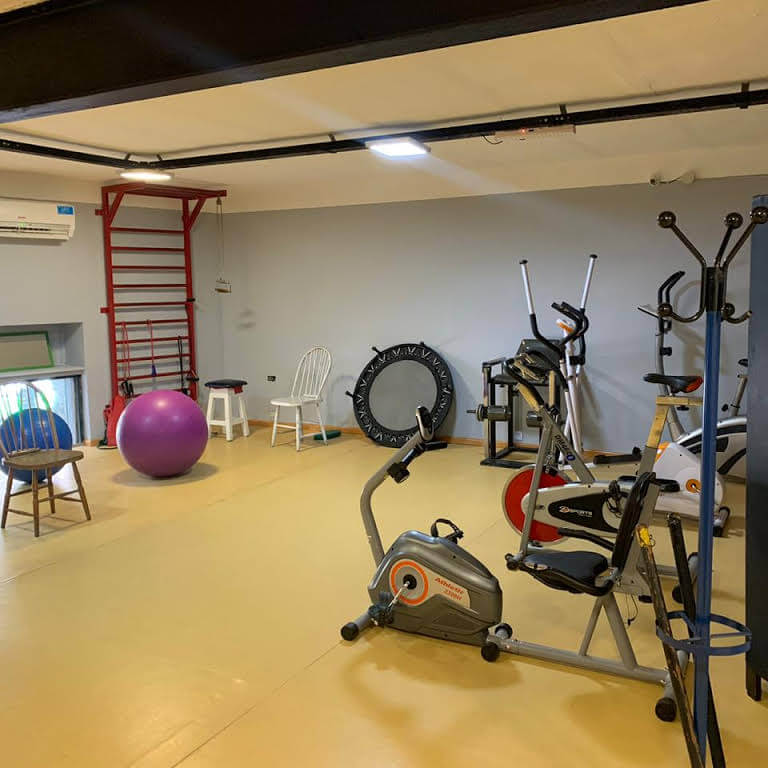
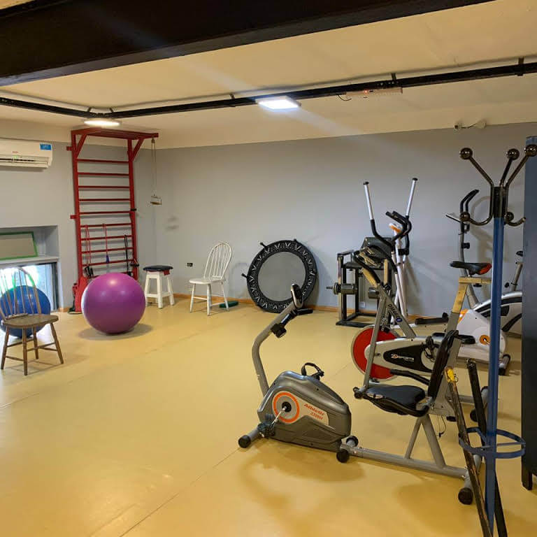

TURNOS
solicitud y cancelación
solicitud y cancelación


Tratamiento
regenerativo


VALLS ofrece una evaluación integral y tratamientos específicos para el dolor y la disfunción por parte de nuestro personal, que es experto en comprender el movimiento y su papel en la optimización de la función.
- ortopédica
- postquirúrgico
- total de reemplazo articular
- de espalda y cuello
- de lesiones deportivas
- de personas mayores
Terapia ocupacional y de manos
Tratamiento de las heridas
Control de dolor
Ferulización personalizada
Cintas Kinesio
Lesiones relacionadas con el trabajo
Lesiones de tejidos blandos
Especializados en dolor de rodilla, dolor de espalda y dolor de cuello, discos vertebrales, lesiones del manguito rotador, terapia de reemplazo de cadera y rodilla, lesiones por accidentes automovilísticos y rehabilitación postquirúrgica, nos enorgullecemos de superar las expectativas de nuestros pacientes. Nuestro objetivo es restaurar un nivel máximo de función y ayudar a prevenir una nueva lesión. ¡Estamos seguros de que podemos volver a ponerlo en acción RÁPIDO!
Es raro, pero aun tratamos a nuestros pacientes uno a uno, no en grupo. Nuestro personal de fisioterapeutas altamente capacitados ha completado una amplia educación continua y se especializa en terapia de rehabilitación para personas con lesiones por accidentes, trastornos espinales complicados, lesiones deportivas y casos postquirúrgicos.
Nuestro enfoque práctico comienza con un examen, una evaluación y un diagnóstico detallados. Colaboramos con el paciente para incluir sus necesidades de terapia de rehabilita- ción y desarrollar un plan de atención adecuado para tratar los problemas identificados. Nuestro personal y terapeutas son amables, compasivos, escuchan sus necesidades y ayudan en todos los sentidos para que su experiencia sea positiva para que pueda sanar rápidamente y mantenerse saludable por más tiempo.

Cadera-Columna-Rodilla
Hombro-Mano-Pie

Tenemos en nuestro equipo un técnico ortopedista, muy reconocido, que se ha sumado al Equipo de Profesionales Centro Valls para dar el servicio de ESTUDIO BIOMECANICO DE LA MARCHA O PISADA.
Mediante este método de diagnostico se puede estudiar el comportamiento estático y dinámico del pie y su relación con el resto del cuerpo humano. El estudio de la marcha proporciona valores para la prevención, corrección y tratamiento de variadas patologías.
Consulta por Whatsapp para saber el valor del Estudio Biomecánico de Marcha + 2 pares de plantillas.

CONSULTORIO NUTRICIONAL EN VALLS
ANIMATE A CAMBIAR TU VIDA TE AYUDAMOS A COMER RICO Y SANO
Planes alimentarios personalizados
Sobrepeso / Obesidad
Colesterol / Hipertensión
Nutrición infantil
Nutrición Deportiva
Bajo peso
ADULTOSY NIÑOS
BIOIMPEDANCIA
¿cuánta grasa tengo?
¿cuánto músculo voy ganando?
¿qué nutrientes necesito?
¿cuál es mi peso saludable?
YOGA, una vez por semana nos
juntamos a hacer posturas de yoga
dinámico para mejorar la salud física y
mental de nuestros pacientes.
(No son clases, sino un grupo de
pacientes que nosjuntamos a hacer
posturas y mejorar día a día en la
practica. )
Reserva tu lugar
Whatsapp al 1141966570

 


El Scanner de antioxidantes Biofotónico de Pharmanex, nos permite ofrecerles un cuidado integral de su salud pudiendo medir los niveles de antioxidantes de tu cuerpo, es decir, TU ENVEJECIMIENTO.
Conocer el nivel de antioxidantes es tan
importante como saber su presión
arterial o su nivel de colesterol.
Informes médicos avalan y nos indican
que los antioxidantes pueden disminuir
el riesgo de contraer patologías como
el cáncer, enfermedades cardíacasy
complicaciones relacionadas con
diabetes.
Nosotros como médicos y muchos de
nuestros pacientes estamos ya
utilizando ésta tecnología con
resultados llamativos que demuestran
su eficacia. En caso que su nivel
antioxidante sea bajo le indicaremos
cual es la forma de aumentar su niveles
de nutrientes en forma medible,
efectiva y garantizada.
Los antioxidantes mejoran su sistema inmunológico, temática tan importante en éstos momentos que esta viviendo el mundo entero. No solo basta con alimentarse bien y hacer ejercicio físico. Es de extrema importancia tomar suplementos vitamínicos que compensen y provean al cuerpo con el soporte nutricional necesario para elevar los niveles deantioxidantes.
En el pasado no hemos recomendado productos específicos para suplementación ya que la mayoría de esos productos son ineficaces y su absorción muy pobre; pero al entrar en conocimientode ésta nueva tecnología llamada PHARMANEX BIOFOTONIC SCANNER que nos permite un método de medición no invasivo, sin dolor, preciso y de bajo costo; hemos decidido ofrecer a nuestros pacientes la posibilidad de éste estudio bonificando su costo por la situación que estamos viviendo.

Artritis significa literalmente "inflamación de una articulación". Una articulación es donde se unen los extremos de dos o más huesos. Un tejido liso de cartílago cubre los extremos de los huesos en una articulación. El cartílago amortigua el hueso y permite que la articulación se mueva fácilmente sin la fricción que vendría con el contacto hueso con hueso.
Hay dos categorías principales de artritis.
La osteoartrosisis es causada por el desgaste del cartílago articular a través del proceso de envejecimiento natural, uso constante o trauma. El cartílago que cubre los extremos del hueso se desgasta y el hueso se frota contra el hueso, lo que causa dolor e hinchazón.
Algunos factores predisponentes son..
- Deseje del miembro, congénito o adquirido
- Sobrepeso
- Profesiones y Deportes que producen impacto y compresión
- Degeneración del cartílago por enfermedades o traumáticas
- Secuela de fracturas intra-articulares.
La artritis /reuma afecta a muchas partes del cuerpo, pero principalmente a las articulaciones. El revestimiento de la articulación se hincha e invade los tejidos circundantes. Suele desarrollarse hinchazón, dolor y rigidez, incluso cuando la articulación no se usa con frecuencia o no se usa en absoluto.
Si usted o sus seres queridos padecen alguno de los siguientes síntomas, es importante buscar atención ortopédica para el diagnóstico y tratamiento.
Los síntomas incluyen:
- Debilidad en los músculos
- Derrame articular y Dolor al tacto
- Capacidad limitada para mover la articulación
- Una sensación o sonido rechinante (crepitación) con el movimiento.
- Dolor cuando se ejerce presión sobre la articulación o se mueve la articulación
Mientras maneja su Artrosis, artritis reumatoideo cualquiera de las numerosas afecciones relacionadas con la artritis, es fundamental obtener el apoyo que necesita. Nuestros médicos ortopédicos en el lugar no solo cumplen con los altos estándares de conocimientos y habilidades médicos de Centro Valls, sino que también se enfocan en crear una relación exitosa con el paciente para garantizar una atención óptima y juntos, monitorear el progreso de su enfermedad y su función
Subir
Las lesiones agudas son aquellas que han ocurrido recientemente, generalmente definidas como ocurridas en las 48-72 horas previas. Las lesiones agudas también suelen ser el resultado de un impacto específico o un evento traumático que ocurre en un área específica del cuerpo. Ejemplos de lesiones agudas incluyen distensiones de tendones, esguinces de ligamentos, distensiones musculares, contusiones musculares y roturas o fracturas de huesos. La mayoría de las lesiones agudas se curan mejor cuando se tratan dentro de los primeros días de la lesión.
Algunos signos que deberían impulsarlo a una visita en el mismo dia, incluyen: hinchazón moderada o severa, hinchazón rápida, incapacidad para mover la articulación en un rango completo de movimiento, incapacidad para caminar, dolor extremo o dolor incluso cuando está descansando el área lesionada, y si la extremidad parece deformada.
Incluso sin ninguno de estos signos, si una lesión no mejora significativamente después de reposarla durante un par de días,o si se siente inseguro,considere la posibilidad de que lo revisen. La evaluación y el tratamiento tempranos de las lesiones agudas son esenciales para una recuperación completa y un regreso seguro a las actividades cotidianas en corto plazo
Subir
Una fractura es cualquier rotura en la superficie de los huesos. Los esguinces y desgarros de ligamentos a veces también pueden incluir una fractura osea. Si bien algunas fracturas se tratan con yesos, otras solo requieren una bota Walker, un aparato ortopédico, cabestrillo u otro soporte. Los huesos rotos a menudo se pueden tratar de manera conservadora, con solo un yeso o una férula, pero muchas situaciones requieren un tratamiento adicional.Es importante tratar un hueso roto de inmediato para asegurarse de que el hueso sane en la posición adecuada y para asegurarse de que los vasos y los nervios cercanos no estén dañados.
Si sospecha que un hueso puede estar fracturado, su primera consulta debe ser con un especialista en ortopedia. CENTRO VALLS le ofrece realizar la radiografía in situ y un médico Especialista que lo tratará rápidamente, lo que le permitirá solucionar su problema y a la vez ahorrar tiempo y dinero.
Subir
Subir
Subir
Av. Pueyrredón 2322
CABA, Buenos Aires